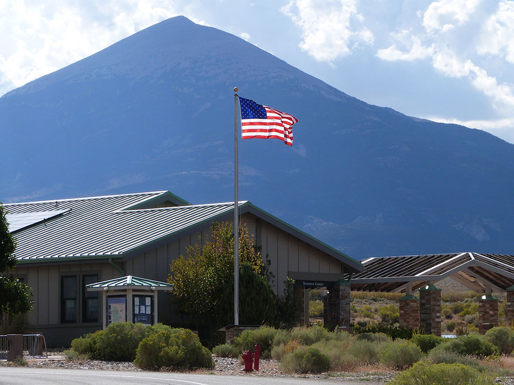
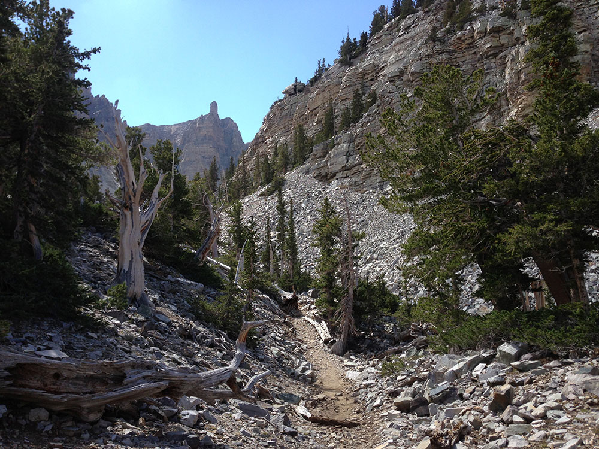
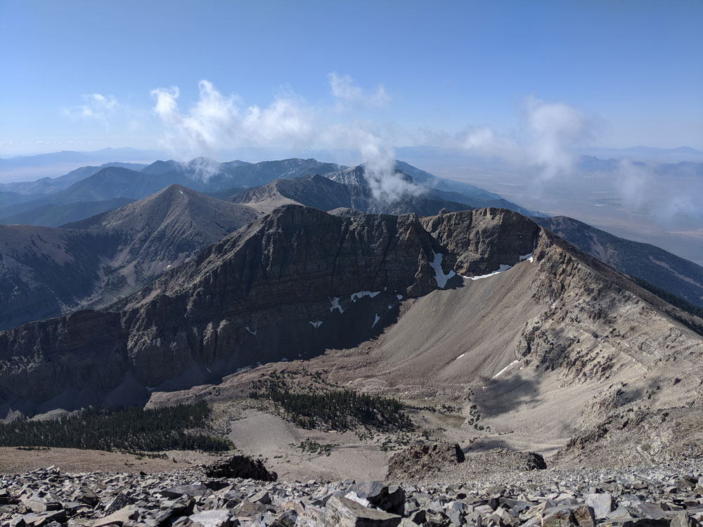
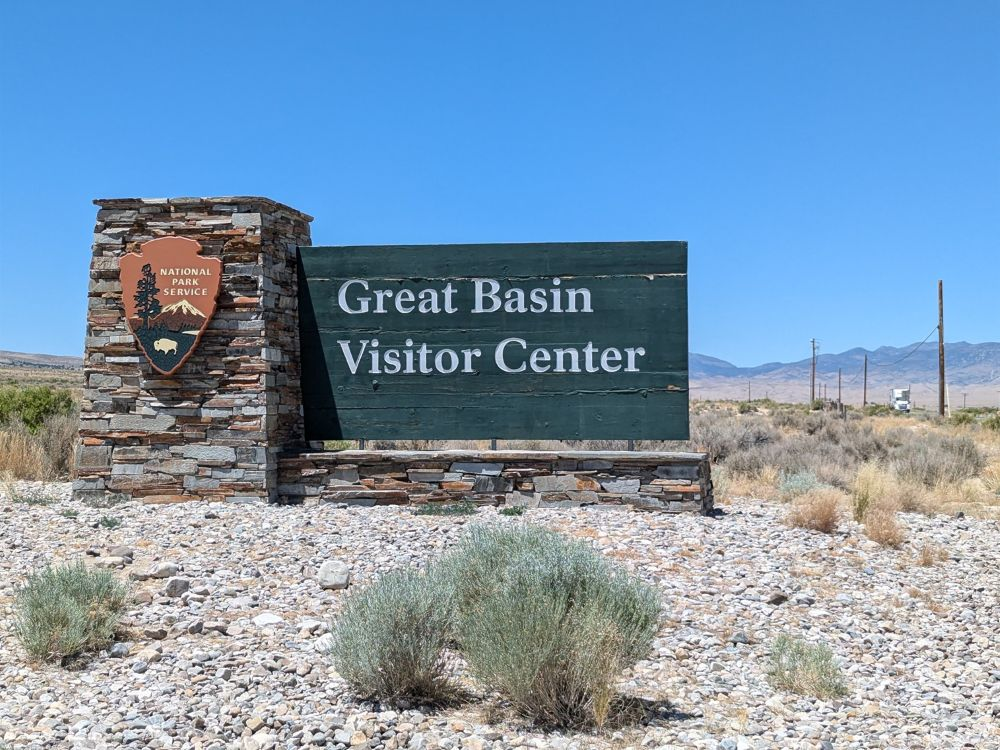
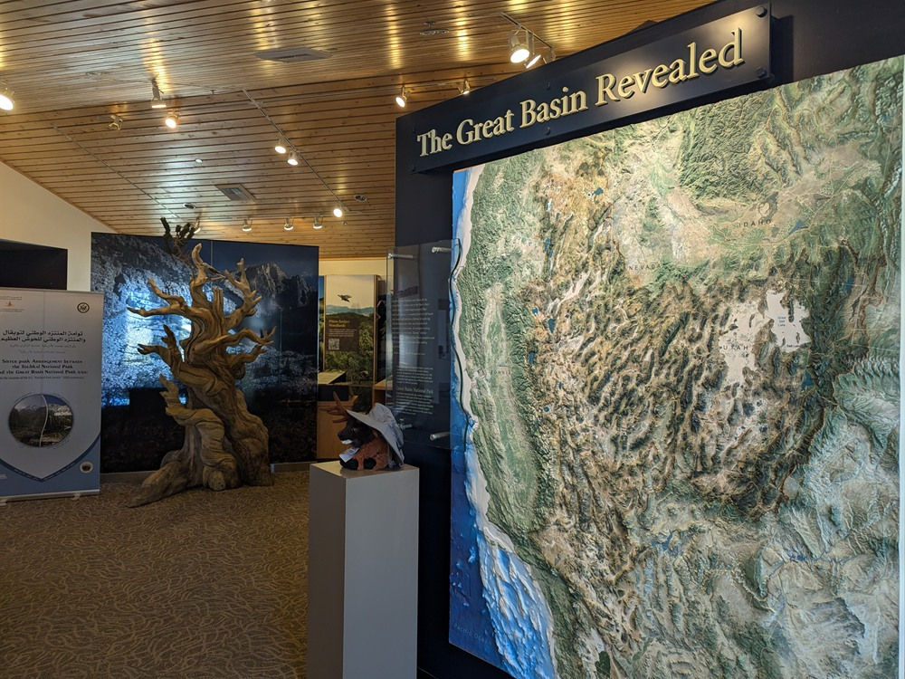

Named for the dry and mountainous region between the Sierra Nevada and the Wasatch Mountains, notable for its groves of ancient bristlecone pines, the oldest known nonclonal organisms, the Lehman Caves, as well as Wheeler Peak Glacier
Lehman Caves Visitor Center
Summer Hours (May 23rd, 2021 to September 11th, 2021): Open daily 8am to 5pm
Fall Hours (September 8, 2021 to October 24, 2021): Open daily 8am to 4:30pm
Winter and Spring Hours (November 1, 2021 to May 23, 2022): Open daily 8am to 4pm
Closed Thanksgiving, Christmas Day and New Year's Day
Great Basin Visitor Center
Summer Hours (July 1, 2021 to September 4th, 2021): Wednesday to Saturday 1pm to 5pm
Closed Martin Luther King Jr. Day, Washington's Birthday, Memorial Day, independence Day, Labor Day, and Columbus Day
There is a per-person fee charged for all visitors on cave tours.
Annual Passes do not cover cave tour fees. Senior and Golden Access card holders are eligible for discounts, but these discounts apply to the card holder only.
Pets are not permitted on trails or in the backcountry of the park, except leashed pets on the Lexington Arch Trail or the trail between Baker and the Great Basin Visitor Center.
Leashed pets can only be exercised in the campgrounds, in front of the visitor centers, and along roads.
From Las Vegas (296 miles): Get on I-515 N/US-95 N from N 4th St. Take US-93 N to NV-487 in White Pine County. Continue on NV-487. Drive to NV-488 W.
From Salt Lake City (234 miles): Follow I-15 S to State Rte 41/UT-28 S in Juab County. Take exit 228 from I-15 S. Follow UT-132 W to US-6 W in Lynndyl. Follow US-6 W to Cut Off Rd in White Pine County. Drive to NV-488 W.
Overview
Great Basin National Park sits in White Pine County in east-central Nevada, a few miles from the Utah border. It takes its name from the Great Basin, the vast region between the Sierra Nevada and the Wasatch Range where rivers never reach the sea. The park is best known for 13,065-foot Wheeler Peak, groves of ancient bristlecone pines that rank among the oldest living things on Earth, and the marble passages of Lehman Caves. It also protects the Wheeler Peak Glacier, one of the southernmost glaciers in the western United States, and some of the darkest night skies in the country.
Congress established the park in 1986, expanding the older Lehman Caves National Monument (created in 1922) to include the high country of the Snake Range, with its bristlecone groves, alpine lakes, and sky-island ecosystems. The park protects about 77,000 acres and is one of the least-visited in the lower 48, which is much of its appeal. Visitors come for the cave tour, the drive up Wheeler Peak, the bristlecone trails, stargazing at an International Dark Sky Park, and the quiet of a landscape without crowds.
Park Sections
The park has two main areas, both reached from the small town of Baker. The Lehman Caves and Wheeler Peak area is the most developed, with the main visitor center, the cave tours, most of the campgrounds, and the Wheeler Peak Scenic Drive. From Baker, take NV-488 about 5 miles west to the visitor center, where the scenic drive begins. South of there, Baker Creek Road leads to a campground and the Baker Lake trailhead. The remote southern part of the park, including Lexington Arch, is reached by unpaved roads off US-50 or from Baker, so ask at a visitor center about current road conditions before you go.
Sightseeing and Exploring the Park
The 12-mile Wheeler Peak Scenic Drive is the park's main sightseeing route. It climbs about 4,000 feet from sagebrush desert to subalpine forest, ending near 10,000 feet at the Wheeler Peak Campground and trailheads. Pull-offs along the way include Mather Overlook, which has wide views across the valley, and the Wheeler Peak Overlook. Aspen groves along the road turn gold in the fall. Trailers and large RVs are not recommended on the upper road because of the grade and tight curves. The road is closed by snow in winter, usually from late fall into late spring.
Hiking
The park has trails for most abilities. The easiest are the short, nearly flat Sky Islands Forest Trail and Mountain View Nature Trail, both near the visitor center. The most popular hike is the Bristlecone and Glacier Trail, about 2.8 miles round trip from the end of the scenic drive, to a bristlecone grove and a view of the Wheeler Peak Glacier. The Alpine Lakes Loop (about 2.7 miles) passes Stella and Teresa Lakes. The Baker Lake and Johnson Lake trails are long and strenuous, as is the roughly 8.6-mile round-trip climb to the summit of Wheeler Peak, which gains nearly 3,000 feet. The Lexington Arch hike (about 3.4 miles round trip) leads to a large limestone arch. Because of the altitude, plan for slower going and quickly changing weather.
Other Activities
Lehman Caves is the park's signature attraction beyond hiking. Ranger-led tours run year-round and usually include the shorter Lodge Room Tour (about an hour) and the longer Grand Palace Tour (about 90 minutes). Tickets are reserved in advance on Recreation.gov, and tours often sell out in summer. The cave is known for its rare shield formations, stalactites, and helictites. Above ground, the park offers stargazing and ranger astronomy programs, an annual astronomy festival, backpacking, fishing in the creeks, and a visit to Upper Pictograph Cave. In winter, visitors can snowshoe or cross-country ski at lower elevations. There are no commercial outfitters inside the park.
Flora and Wildlife
Great Basin protects the Great Basin bristlecone pine, which grows at high elevations on dry, rocky slopes. Some of the park's trees are more than 3,000 years old. The park also has limber pine, Engelmann spruce, quaking aspen, and pinyon-juniper woodland, with sagebrush at lower elevations. Wildlife is less of a draw than the plants, but visitors can see mule deer, yellow-bellied marmots, pikas, golden eagles, and many songbirds, mostly in the early morning or evening along the scenic drive and creeks. Bonneville cutthroat trout live in some streams. There are no guided wildlife tours, so most viewing is on your own from roads and trails.
Access
The park is reached by car on paved roads. Baker, Nevada, a village of fewer than 100 people, is the gateway, and the park entrance is about 5 miles west of town on NV-488, off US-50/US-6. Ely is about 66 miles to the northwest, Salt Lake City is about 4 hours away, and Las Vegas is about 4.5 hours to the south. There is no public transportation to the park and no commercial air service nearby, so nearly all visitors drive. Cell service is limited and services are scarce, so fill your gas tank in Ely or Delta, Utah, and bring food and water.
Seasons
Summer is the most popular season, with warm days and cool nights at elevation, though afternoon thunderstorms are common. The Wheeler Peak Scenic Drive and high trails are usually fully open from about late May or June through the fall. Fall brings golden aspens in late September and early October. In winter the upper scenic drive closes to vehicles and the high trails need snow gear, but Lehman Caves, the visitor center, and the lower campgrounds remain open. Spring is variable, with snow lingering on the high peaks into June. Skies are darkest around the new moon in any season.
Camping and Lodging
The park has five developed campgrounds: Lower Lehman Creek, Upper Lehman Creek, Baker Creek, Grey Cliffs (group), and Wheeler Peak, plus backcountry camping. Lower Lehman Creek is open year-round, while the others are seasonal. There is no lodging inside the park. In Baker there are a few small motels and inns, such as the Stargazer Inn and the Whispering Elms Motel. The Border Inn, a casino motel on US-50 at the Utah line, is about 12 miles east. About an hour and 15 minutes away, Ely has the most options, including the historic Hotel Nevada and the Jailhouse Motel and Casino. Delta, Utah, about 1.5 hours east, has chain motels.
Visitor Centers
The Lehman Caves Visitor Center, about 5 miles west of Baker, is the park's main visitor center. It has exhibits, a film, a bookstore, a small café, and the cave tour ticket desk, and it is the best place to ask rangers about road and trail conditions. The Great Basin Visitor Center in Baker is smaller and open seasonally, with exhibits on the park, and is a convenient stop on the way in. Check the National Park Service website for current hours before you visit.
This article uses material from the Wikipedia article "Great Basin National Park", which is released under the Creative Commons Attribution-Share-Alike License 3.0. Additional information comes from the National Park Service Great Basin National Park website.
Featured Locations and Trails
Alpine Loop Trail
Trail featuring forests, meadows, and glacial lakes beneath rugged mountain peaks.

Baker Creek Road
Access to campgrounds, trailheads, and quiet mountain valleys surrounded by pinyon-juniper forests and alpine terrain.
Baker Lake–Johnson Lake Loop
Strenuous backcountry loop traversing alpine terrain, glacial lakes, forested valleys, and historic mining remnants in a remote wilderness setting.
Bristlecone and Glacier Trail
Bristlecone pine grove, the most accessible grove in the park, located on the northeast side of Wheeler Peak, reached by a 1.5 mile (3 miles round trip) trail from Wheeler Peak Campground
Sky Islands Forest Trail
Forest trail winding through high-elevation woodland showcasing unique ecosystems and ancient tree species.
Upper Pictograph Cave
Pictographs that depict human figures, animals, and abstract symbols created by early cultures.

Wheeler Peak Scenic Drive
Scenic Drive takes visitors on a paved 12 mile, out and back road to an elevation exceeding 10,000 feet above sea level, to the face of Wheeler Peak
Bristlecone/ Glacier Trail
4.5 miles round-trip, 1059 feet
Trail continuing beyond the bristlecone pine grove to the only glacier in Nevada

Lehman Caves
Caves made up of a marble and limestone solution that forms the many cave decorations throughout the caverns
Wheeler Peak Summit Trail
8.2 mies round-trip, 2906 feet
Tallest mountain in the Snake Range and in White Pine County, with a summit elevation of 13,065 feet








